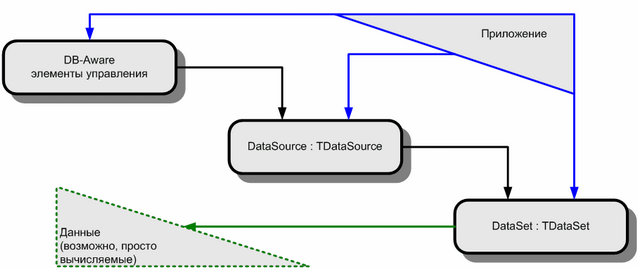

Использование DB Controls без базы данных
Довольно часто на различных форумах задаются вопросы примерно такого характера: “Как мне красиво (как в DBGrid) отобразить содержимое списка структур?”, “Как можно вывести данные в DBGrid/DBControlGrid?”.
Конечно, существуют различные варианты ответа на каждый из этих вопросов. В первом случае можно попытаться создать потомка TDBGrid. Во втором – создать потомка TDataSource. Однако на мой взгляд, предпочтительнее (как в отношении предоставляемого программисту набора функций, так и в отношении применимости конкретного ответа для решения целого круга похожих задач) способ, применяемый обычно для разрешения более принципиальной задачи: как обеспечить единообразную работу с данными из имеющейся БД (DBase, Interbase, MS SQL Server и т.п.), и с другими, в частности, локальными данными программы?
Работа с базами данных при помощи стандартного набора компонентов Delphi строится по следующей схеме:

Рисунок 1. Схема взаимодействия программы и элементов управления с БД.
Видно, что наиболее полного единообразия работы с данными из БД и другими своими наборами данных можно достичь, создав для доступа к своим данным потомка TDataSet, поскольку именно этот класс отвечает за реальный доступ к данным.
Создание своего TDataSet – вовсе не такая сложная работа, как кажется на первый взгляд при просмотре исходного кода TDataSet и/или его стандартных потомков (например, TIBCustomDataSet). Основным препятствием является почти полное отсутствие документации от Borland. В поставляемом с Delphi простом примере TTextDataSet (потомка TDataSet, работающего с текстовым файлом на диске) прямо говорится: “Currently, the notes in this source file represent the only documentation on how to create a TDataSet implantation”, что в приблизительном переводе означает: “в настоящее время данный пример представляет собой единственную документацию по созданию реализации TDataSet”.
В данной работе я рассмотрю создание двух TDataSet. Один будет обеспечивать доступ в режиме “только чтение” к данным, вычисляемым “на лету” (в качестве примера выбрана таблица квадратов натуральных чисел от 1 до 20). Второй же позволит осуществлять доступ с возможностью модификации к списку структур вида (имя, адрес электронной почты). Любой промежуточный уровень функциональности легко может быть получен путем усечения функциональности второго примера.
В настоящей работе не рассматриваются:
| · | реализация установки фильтров на записи и поиска записей. Впрочем, получить представление о том, как это следует делать, можно, просмотрев исходные тексты методов FindRecord, FindFirst, FindNext, FindLast, FindPrior, Locate и Lookup (модули DB.PAS и DBTABLES.PAS, классы TDataSet и TBDEDataSet ); |
| · | поля-агрегаты (методы GetAggregateValue, GetAggRecordCount, ResetAggField); |
| · | реализация интерфейса IProviderSupport (семейство методов PSxxxxx). |
Простейший DataSet
Есть такое хорошее правило – прежде чем переходить к программированию, четко определить круг задач, которые обязательно должны быть решены. Давайте ему последуем. Я хочу создать потомка TDataSet, работающего с набором данных, содержащим два столбца: целое число и его квадрат. Для простоты этот набор данных будет содержать лишь 20 записей – для чисел от 1 до 20. Borland выдвигает еще одно требование: каждый потомок TDataSet должен поддерживать работу с закладками. Однако я позволю себе пока его проигнорировать – тем более, что и без этого получается практически вполне работоспособный класс. Желающие могут добавить в этот пример поддержку закладок, предварительно ознакомившись с механизмом закладок в следующем разделе.
Примечание
О терминологии: в дальнейшем я буду использовать название TDataSet для обозначения программного кода и классов, тогда как под набором данных буду понимать сам набор данных, доступ к которому обеспечивает конкретный потомок TDataSet.
Чтобы создать потомка TDataSet, нужно понять, как TDataSet выполняет доступ к данным. Общедоступный (public) интерфейс полностью реализуется средствами самого TDataSet; на плечи конкретных потомков ложится лишь обеспечение средств коммуникации общедоступных методов с набором данных. В основном, коммуникация осуществляется методами InternalXXX, часть из которых в TDataSet объявлена пустыми, а часть – и вовсе абстрактными.
Эти методы можно разделить по их назначению на три группы: навигация (перемещение) по набору и чтение записи из БД в кэш-буфер (а также запись из кэш-буфера в набор данных), вставка/удаление записей, чтение/изменение значений полей записи, прочие методы (открытие и закрытие TDataSet, закладки, выделение и освобождение памяти).
Логика TDataSet никогда не работает со значениями полей записи прямо в наборе. Вместо этого вызовы GetRecord читают целиком записи, причем каждая из них заносится в свой кэш-буфер, и дальнейшие операции с полями каждой считанной записи выполняются в кэш-буфере. В TDataSet одновременно в памяти присутствуют, в общем случае, несколько буферов (свойство-массив Buffers). Помимо данных, считанных из БД, потомок TDataSet может размещать в буфере произвольную дополнительную служебную информацию.
Прежде, чем переходить к рассмотрению методов, я поясню одно из центральных для TDataSet понятий - понятие курсора.
Стандартный способ работы с БД таков, что целевая запись для таких воздействий, как удаление записи, изменение записи, вставка новой записи перед данной и т.п. не указывается явно при вызове соответствующей операции, а определяется предыдущими операциями. Соответственно, для хранения описания того места в наборе данных, которое будет являться целевым для следующей операции, необходимо ввести некую сущность – курсор.
Курсор - это произвольная информация, придающая смысл в каждый момент времени таким понятиям, как “текущая”, “следующая” и (для двунаправленных наборов данных) “предыдущая” запись. Позволю себе вольность пользоваться в отношении курсора фразой “перемещение курсора к некоторой записи”, подразумевая изменение составляющей курсор информации так, чтобы курсор указывал на эту запись.
Тот курсор, который определяет целевую позицию для действий, запрашиваемых у TDataSet сторонним кодом, я в дальнейшем буду называть логическим курсором. С логическим курсором в TDataSet связан буфер активной записи (свойство ActiveBuffer хранит адрес этого буфера).
Логический курсор никак не учитывает структуру набора данных, а потому сам по себе в общем случае недостаточен для эффективного указания на запись реального набора. Например, набор может представлять собой дерево, а коду TDataSet потомок, обеспечивающий работу с этим деревом, представляет его как последовательность вершин дерева, получающуюся при его обходе по некоторому правилу. В таком случае самое большее, что можно выяснить, зная значение логического курсора – это номер, под которым встретится данная вершина при таком обходе. Согласитесь, что не слишком удобно основывать работу с деревом на такой информации, ведь ее придется все время пересчитывать, например, в путь от корня дерева к данной вершине.
Поэтому потомкам TDataSet предлагается пользоваться своим собственным курсором, осведомленным о структуре набора. Назовем этот курсор физическим курсором. В простейшем случае, когда набор данных является простым массивом, на роль физического курсора может вполне сгодиться индекс записи в массиве.
Примечание
В дальнейшем под курсором следует понимать логический курсор, если не оговорено обратное. Запись, на которую указывает логический курсор, я буду называть текущей записью.
Для поддержания согласованности логического курсора с физическим используется следующая техника: после вызова метода, от которого ожидается перемещение физического курсора на непредсказуемое расстояние от его текущего положение (например, при переходе на первую запись или поиске по закладке), вызывается метод Resync, считывающий в кэш-буферы запись, на которую теперь указывает физический курсор, а также несколько окружающих ее записей. Если же перемещение предсказуемо (как в случае метода MoveBy, вызываемого из Prior и Next), то читается лишь часть окружающих записей. Понятно, что в случае, когда вообще не ожидается никаких перемещений, никакие записи и не перечитываются.
Если потомку требуется переместить физический курсор вопреки ожиданиям TDataSet, необходимо оповестить его об этом вызовом CursorPosChanged. Такое оповещение обрабатывается не сразу, и, говоря откровенно, меня до сих пор гложут сомнения, не надежнее ли сразу вызывать Resync (хотя в таком случае можно проиграть в скорости, если после этого Resync будет вызван повторно).
Таким образом, в момент вызова методов InternalXXX логический курсор совпадает с физическим (от возможных сбоев этого соответствия в ходе выполнения закрытым кодом каких-либо внутренних операций спасает выполняющийся перед входом в InternalXXX вызов метода UpdateCursorPos), а после выхода из InternalXXX логический курсор опять-таки приводится в соответствие физическому.
Примечание
UpdateCursorPos работает с буфером текущей записи: для помещения физического курсора на ту же запись, на которую указывает логический, он вызывает InternalSetToRecord, указав в качестве аргумента (буфера записи, к которой нужно перейти) буфер текущей записи (ActiveBuffer).
Единственное обнаруженное мной исключение из этого правила – метод InternalInsert (вызывающийся при вставке записи), перед вызовом которого не выполняется UpdateCursorPos, из-за чего приходится искать способ переместить физический курсор на ту же запись, на которую указывает логический, при этом не пользуясь private-членами TDataSet). Подробнее об этом – в следующем разделе.
При открытии (инициализации) логического курсора (TDataSet.OpenCursor, вызывается при TDataSet.Active:=true и по выходу из режима дизайнера) вызывается метод InternalOpen. Он должен сформировать список определений полей FieldDefs и, если свойство DefaultFields равно True, создать на их базе список полей Fields. Он также должен связать поля из списка Fields с полями набора данных и установить физический курсор в позицию перед первой записью. Кроме того, если до начала манипулирования содержащимися в наборе данными нужно предпринять какие-либо действия (например, установить соединение с удаленным сервером), их также следует выполнить в этом методе.
InternalOpen может вызываться не только из OpenCursor. Запрос на формирование списка FieldDefs может поступить и отдельно: в этом случае вызывается метод InitFieldDefs, который может вызывать InternalInitFieldDefs (последний должен инициализировать FieldDefs).
Для проверки того, что логический курсор открыт (т.е. что набор готов предоставить доступ к своим данным), вызывается функция IsCursorOpen, возвращающая True или False. Ясно, что до выполнения Open она должна возвращать False, а после Open и до последующего Close – True.
Для закрытия набора данных (TDataSet.Close) вызывается метод InternalClose, назначение которого симметрично InternalOpen: если DefaultFields установлено в True, то уничтожить список полей Fields (в этом случае они были созданы самим потомком в ходе выполнения InternalOpen); также, в случае необходимости, выполнить такие действия, как разрыв соединения с сервером БД.
Для навигации (перемещения логического курсора) по набору применяются общедоступные методы First, Prior, Next и Last.
Метод First вызывает метод InternalFirst, который должен установить физический курсор на позицию перед первой записью в наборе. После этого First выполняет серию вызовов GetNextRecord (а те, в конечном счете, GetRecord) для чтения в кэш-буферы следующей (т.е. первой) записи набора и нескольких последующих записей. Затем при помощи вызова DataEvent генерируется уведомление об изменении данных в кэш-буферах.
Зачем нужно устанавливать курсор на позицию перед первой записью, а потом читать следующую запись? Почему бы просто не поместить курсор сразу на первую запись? Дело, возможно, в том, что если для позиционирования на первую запись необходимо переоткрытие набора (например, в однонаправленных наборах), то эта обязанность возлагается на InternalFirst. То есть для помещения курсора на первую запись InternalFirst должен был бы переоткрыть набор и выполнить переход к следующей записи. По-видимому, команда разработчиков Borland решила, что будет лучше, если все команды навигации по записям будут подаваться из находящегося в базовом классе TDataSet слоя абстрактной логики, а не из методов, отвечающих за конкретную реализацию доступа к данным (таких, как InternalFirst). Таким образом, работа IntrnalFirst должна в такой ситуации завершаться переоткрытием (а после этой операции курсор, как уже говорилось, находится перед первой записью).
Аналогично, InternalLast должен устанавливать физический курсор в позицию, находящуюся за последней записью БД (это уже, видимо, просто для единообразия).
Методы Prior и Next апеллируют к одному и тому же методу GetRecord. Последний многофункционален: он должен проверить, не выйдет ли позиция курсора при выполнении операции за пределы БД, изменить позицию физического курсора, считать из набора в буфер записи, переданный в качестве аргумента, данные записи, ставшей текущей, и (в зависимости от параметров вызова) в случае ошибки возбудить исключение.
Когда необходимо прочитать значение некоторого поля текущей записи, вызывается GetFieldData, в который передается ссылка на соответствующий нужному полю объект TField и адрес буфера, содержащего запись. GetFieldData – перегруженный метод, но фактическое извлечение значения поля из буфера записи в так называемом Native-формате (его мы рассмотрим далее) осуществляет лишь одна из его версий (остальные версии в конечном счете просто вызывают именно ее).
Кстати, существует и еще один способ позиционирования физического курсора: метод InternalSetToRecord предназначен для установки курсора на запись, содержимое которой находится в переданном в качестве аргумента буфере (ранее оно было считано в этот буфер методом GetRecord).
Для выделения памяти под новый буфер вызывается метод AllocRecordBuffer, для освобождения занятой под буфер памяти – FreeRecordBuffer. Надо заметить, что TDataSet может повторно использовать уже выделенный однажды буфер для хранения другой записи. Обработку вытеснения записи из буфера при таком повторном использовании можно поместить туда же, куда и действия по подготовке буфера перед помещением туда записи – в InitRecordBuffer. Этот метод вызывается перед каждым помещением в буфер какой-либо записи.
Редактирование данных, в т.ч. добавление и удаление записей, становится возможно, когда метод GetCanModify возвращает True. Процессы, происходящие при редактировании, будут рассмотрены в следующем разделе, поэтому пока мы считаем, что GetCanModify всегда возвращает False.
Метод InternalHandleException служит для обработки возможных исключений, возникающих при чтении объекта из потока. Насколько мне удалось понять из исходных текстов потомков TDataSet, предлагаемых Borland, хорошим тоном является такая его реализация: Application.HandleException(Self).
Метод IsSequenced должен возвращать True, если в наборе каждую запись можно однозначно сопоставить с ее порядковым номером (т.е. числом, показывающим, какой по счету окажется запись при последовательном переборе всех записей, начиная с первой).
Помимо этих методов, в работе с данными может участвовать еще несколько семейств методов, предназначенных для расширения возможностей TDataSet. Одно из них - работа с закладками - как я уже говорил, будет рассмотрено в следующем разделе. Поддержка остальных не является обязательной (см. также перечень не рассматриваемых здесь функций в конце раздела “Область применения”). Однако три из них стоит реализовать, иначе довольно некрасиво смотрится полоса прокрутки в DBGrid и подобных ему элементах управления, а клиенты теряют возможность простого позиционирования на запись по ее номеру.
| · | GetRecordCount должен возвращать общее число содержащихся в наборе записей. |
| · | GetRecNo должен возвращать номер (начиная с 1) текущей записи. |
| · | SetRecNo должен устанавливать физический и логический курсоры на запись с указанным номером. |
Последние два метода фактически являются реализацией свойства RecNo.
Два слова о Native-формате данных: детально мы его обсудим в следующем разделе, пока же – основное. Извлеченные из записи данные следует возвращать в особом формате (Native), своем для каждого типа поля. В нашем примере используются только поля типа ftInteger, для которых Native-формат представляет собой 4-байтовое целое число со знаком, т.е. значение типа integer. (см. чтение в методе GetFieldData).
Листинг 1 TMyDataSet (read-only)
unit DataSet0;
//Простой Read-Only BiDirectional DataSet в виде таблицы
// квадратов целых чисел (два поля – число и его квадрат)
interface
uses DB, Classes {для TComponent};
type
TMyDataSet = class(TDataset)
protected
procedure InternalHandleException; override;
// Инициализация/деинициализация курсора
procedure InternalInitFieldDefs; override;
procedure InternalOpen; override;
function IsCursorOpen: Boolean; override;
procedure InternalClose; override;
// Выборка
function GetRecord(Buffer: PChar; GetMode: TGetMode; DoCheck: Boolean):
TGetResult; override;
function AllocRecordBuffer: PChar; override;
procedure FreeRecordBuffer(var Buffer: PChar); override;
procedure InternalInitRecord(Buffer: PChar); override;
// Навигация
procedure InternalFirst; override;
procedure InternalLast; override;
procedure InternalSetToRecord(Buffer: PChar); override;
// Разрешение доступа
function GetCanModify: Boolean; override;
// Необязательные методы
function GetRecordCount: Integer; override;
//Везде в данном коде, где используется RecordCount, можно было бы просто
//написать List.Count. Реализовывать GetRecordCount не обязательно.
procedure SetRecNo(Value: Integer); override;
function GetRecNo: Integer; override;
//Здесь номер записи считается от 1
public
// Чтение поля
function GetFieldData(Field: TField; Buffer: Pointer): Boolean; override;
// Создание/уничтожение
constructor Create(AOwner: TComponent); override;
private
FIsOpen: boolean;
FCursor: integer;
end;
TRecordData = record
//Собственно копия записи – по замыслу, она должна считываться из БД
Number, Square: integer;
end;
TRecordBuffer = record //Формат буфера, хранящего запись: данные записи +
//служебная информация
RecordData: TRecordData;
RecordIndex: integer; //Номер записи, считая от 1
end;
PRecordBuffer = ^TRecordBuffer;
implementation
procedure TMyDataSet.InternalHandleException;
begin
Application.HandleException(Self)
end;
procedure TMyDataSet.InternalInitFieldDefs;
begin
FieldDefs.Clear;
with FieldDefs.AddFieldDef do
begin
DataType := ftInteger;
FieldNo := 1;
Name := 'Число';
end;
with FieldDefs.AddFieldDef do
begin
DataType := ftInteger;
FieldNo := 2;
Name := 'Квадрат';
end;
end;
procedure TMyDataSet.InternalOpen;
begin
InternalInitFieldDefs;
if DefaultFields then
CreateFields;
BindFields(true); //Привязываем поля к БД
FIsOpen := true;
FCursor := 0;
end;
function TMyDataSet.IsCursorOpen: Boolean;
begin
result := FIsOpen
end;
procedure TMyDataSet.InternalClose;
begin
BindFields(False); //Отвязываем поля
if DefaultFields then
DestroyFields;
FIsOpen := false;
end;
procedure TMyDataSet.InternalFirst;
begin
FCursor := 0
end;
procedure TMyDataSet.InternalLast;
begin
FCursor := RecordCount + 1
end;
function TMyDataSet.GetRecord(Buffer: PChar; GetMode: TGetMode;
DoCheck: Boolean): TGetResult;
begin
result := grOK;
case GetMode of
gmPrior: if FCursor <= 1 then
result := grBOF
else
Dec(FCursor);
gmNext: if FCursor >= RecordCount then
result := grEOF
else
Inc(FCursor);
gmCurrent: if (FCursor < 1) or (FCursor > RecordCount) then
Result := grError;
end;
if result = grOK then
with PRecordBuffer(Buffer)^ do
begin
RecordData.Number := FCursor;
RecordData.Square := sqr(RecordData.Number);
RecordIndex := FCursor;
end;
if (result = grError) and DoCheck then
DatabaseError('Error in GetRecord()');
end;
function TMyDataSet.GetRecordCount: Integer;
begin
Result := 20
end;
procedure TMyDataSet.SetRecNo(Value: Integer);
begin
if (Value < 1) or (Value >= RecordCount + 1) then
exit;
FCursor := Value;
Resync([])
end;
//Мне не пришло в голову более умного средства синхронизации логического
// курсора с физическим, чем выполнение Resync (ресинхронизация – сброс
// логического курсора и последующее чтение записей, окружающих
// физический курсор)
function TMyDataSet.GetRecNo: Integer;
//Возвращает номер записи, соответствующей активному в данный момент буферу
begin
Result := PRecordBuffer(ActiveBuffer)^.RecordIndex
end;
procedure TMyDataSet.InternalSetToRecord(Buffer: PChar);
begin
FCursor := PRecordBuffer(Buffer)^.RecordIndex
end;
function TMyDataSet.AllocRecordBuffer: PChar;
begin
GetMem(result, sizeof(TRecordBuffer))
end;
procedure TMyDataSet.FreeRecordBuffer(var Buffer: PChar);
begin
FreeMem(Buffer, sizeof(TRecordBuffer))
end;
procedure TMyDataSet.InternalInitRecord(Buffer: PChar);
begin
inherited; //Нам не нужна какая-то особая инициализация буфера записи
// до чтения туда фактической записи
end;
function TMyDataSet.GetCanModify: Boolean;
begin
result := false
end;
function TMyDataSet.GetFieldData(Field: TField; Buffer: Pointer): Boolean;
begin
result := true;
case Field.FieldNo of
1: PInteger(Buffer)^ := PRecordBuffer(ActiveBuffer)^.RecordData.Number;
2: PInteger(Buffer)^ := PRecordBuffer(ActiveBuffer)^.RecordData.Square;
else
result := false;
end;
end;
constructor TMyDataSet.Create(AOwner: TComponent);
begin
inherited;
FIsOpen := false;
end;
end.
Для проверки работы класса TMyDataSet можно использовать следующий тестовый проект:
Листинг 2
program Dataset;
uses Forms, DB, DBGrids, DBCtrls, Controls, DataSet0;
var
F: TForm;
DS: TDataSource;
MyDataSet: TMyDataSet;
begin
Application.Initialize;
Application.CreateForm(TForm, F);
F.Width := 300;
F.Height := 300;
F.Position := poDesktopCenter;
MyDataSet := TMyDataSet.Create(F);
MyDataSet.Open;
DS := TDataSource.Create(F);
DS.DataSet := MyDataSet;
with TDBNavigator.Create(F) do
begin
Parent := F;
Align := alTop;
DataSource := DS
end;
with TDBGrid.Create(F) do
begin
Parent := F;
Align := alClient;
DataSource := DS
end;
Application.Run;
end.
Добавление возможностей редактирования
Разумеется, чаще возникают ситуации, когда необходимо обеспечить возможность редактирования данных, в т.ч. удаления записей и добавления новых. Определенные сложности при этом могут возникать лишь при добавлении новых записей, в то время как редактирование и удаление достаточно тривиальны.
Рассмотрим более сложный и более приближенный к реальности пример потомка TDataSet. Наш класс TMyDataSet будет предоставлять доступ для чтения/изменения/удаления/добавления записей в адресную книгу, представляющую собой список (обычный TList), содержащий указатели на записи, состоящие из двух строковых компонентов: имени и электронного адреса. Кроме того, TMyDataSet будет поддерживать работу с закладками.
Итак, какие действия предпринимает TDataSet при редактировании, добавлении и удалении записей?
Самая простая операция – удаление. Вызов общедоступного метода Delete приводит (если TDataSet не находится в состоянии вставки записи, в противном случае Delete просто вызывает Cancel) к вызову InternalDelete, на который возлагается обязанность удалить запись из набора. Работа завершается вызовом Resync, так что InternalDelete может поместить физический курсор на любую запись по своему усмотрению.
Что касается редактирования, то можно выделить два его вида: обычное редактирование записи (состояние dsEdit), которое я и буду в дальнейшем называть редактированием, и вставка записи (dsInsert).
Для начала редактирования вызывается метод Edit. Он, в свою очередь, вызывает метод InternalEdit. В большинстве ситуаций никаких действий в InternalEdit можно не предпринимать – TDataSet переведет объект в состояние dsEdit, особым образом обработает вычисляемые (calculated) поля, выдаст сообщение об изменении записи и т.д. Для начала вставки записи вызовается Insert или Append. Как в состоянии dsInsert, так и в dsEdit TDataSet позволяет вносить в запись изменения.
Выводится из этих состояний TDataSet также одинаковыми способами. Их два: вызов метода Post (подтверждение изменений – и вставки, если мы находимся в состоянии dsInsert) или метода Cancel (отмена изменений/вставки). Первый из них вызывает InternalPost, второй – InternalCancel. Отметим, что перед вызовом каждого из них осуществляется вызов UpdateCursorPos – а это означает, что физический курсор будет совпадать с логическим. Методы Post и Cancel могут быть вызваны не только напрямую сторонним кодом, но и из других методов TDataSet: так, при попытке, пока TDataSet находится в состоянии редактирования (dsEdit) или вставки (dsInsert), переместить логический курсор на другую запись, операция вставки или редактирования будет либо отменена, либо подтверждена (в зависимости от того, внесены ли в запись изменения). Логика TDataSet полностью возлагает реализацию добавления/удаления/редактирования записей на Internal-методы; в частности, именно они определяют, в какую позицию набора будет при вставке помещаться вставляемая запись, будет ли она добавлена сразу (а при вызове InternalCancel – удалена) или будет существовать только в виде буфера (а физически добавляться при вызове InternalPost).
Серьезное обсуждение операции вставки невозможно без знакомства с аппаратом закладок.
Закладка (bookmark) – это некоторая информация, идентифицирующая положение записи в наборе данных. Предпочтительно представлять закладку ANSI-строкой символов (т.е. последовательностью ненулевых символов, завершающейся нулевым), т.к. клиент может пытаться читать ее из свойства Bookmark методом GetBookmarkStr именно как ANSI-строку (в примере от Borland закладка представляется 4-байтовым адресом записи, что, безусловно, неправильно, т.к. адрес может содержать нулевые байты). Свойство Bookmark возвращает закладку, соответствующую текущей записи. Впоследствии с помощью этой закладки можно очень быстро сделать текущей соответствующую ей запись. Закладка всегда указывает на одну и ту же запись, вне независимости от изменения положения этой записи в наборе.
Если задача потомка TDataSet – обмен данными с каким-либо сервером БД, то, скорее всего, сервер уже снабжен поддержкой закладок, и можно просто перенаправлять все запросы ему.
Кроме собственно закладки, каждой записи соответствует поле так называемого флага закладок. Записи соответствует ровно один флаг закладки, как и ровно одна закладка. Флаг закладки предназначен для того, чтобы логика TDataSet могла отличать одни типы записей от других. Помимо нормального флага bfCurrent, определены следующие значения:
| · | bfInserted – “вставленная” запись (запись, подлежащая просмотру и редактированию, но еще не включенная в набор). |
| · | bfBOF – запись, находящаяся перед первой записью (например, вставленная в пустой набор). Для установки физического курсора на запись с таким флагом закладки логика TDataSet вызывает InternalFirst вместо InternalSetToRecord; |
| · | bdEOF – запись, находящаяся за последней записью. Вызывается InternalLast. |
Для клиента (т.е. внешнего по отношению к потомку TDataSet кода) работа с закладками сводится к двум операциям: чтению закладки для текущей записи и перемещению к записи, для которой известна закладка. Этим действиям соответствуют два метода TDataSet: GetBookmarkData и InternalGotoBookmark. Есть, впрочем, и третий метод, SetBookmarkData, служащий для изменения значения закладки текущей записи. Замена закладки исключительно плохо документирована. Разбор исходного текста класса TDataSet показывает, что код TDataSet вызывает SetBookmarkData в одном-единственном случае – перед вызовом InternalInsert новой записи приписывается та же закладка, что и предыдущей активной (если только вставляемая запись не окажется первой и единственной в наборе).
Смысл этого дублирования мне (после просмотра примера от Borland) видится таким: так как значение физического курсора, соответствующее предыдущей активной записи, неизвестно, а добавленная в набор данных запись может до вызова Post быть “висячей” (а значит, также не иметь соответствующего ей значения физического курсора), то предлагается вместо перехода на запись использовать переход на закладку. При этом до вызова Post предыдущая активная запись и новая запись имеют одинаковые закладки. Никакой коллизии здесь нет – при попытке получить закладку вставленной, но не добавленной в набор записи (у нее флаг закладки равен bfInserted, bfEOF или bfBOF), возвращается пустая строка (т.к. метод BookmarkAvailable может вернуть True лишь для записей с флагом закладки bfCurrent). То есть, с точки зрения внешнего по отношению к TDataSet кода, новая запись закладки не имеет. Это, кстати, следует учитывать в реализации поиска записи по закладке: поиск нужно проводить лишь по записям с флагом закладки bfCurrent.
При обработке InternalPost закладку у вставляемой записи нужно изменить на такую, которая позволит однозначно эту запись идентифицировать – ведь теперь ее флаг закладки равен bfCurrent, и если оставить старое значение закладки, то в этом наборе будут присутствовать несколько записей с одинаковыми закладками, но разными значениями физического курсора.
Как только мы начинаем реализовывать операцию вставки, сразу же встает важный вопрос: в какую позицию набора помещать добавляемую запись?
Вообще говоря, в TDataSet существует два способа добавления записи. Это методы Insert и Append (оба в итоге вызывают InternalInsert) – их назначение описано в справочной службе. Для обоих методов жестко определено лишь одно требование: логический курсор должен переместиться на добавленную запись. О том, в какую именно позицию вставляется новая запись каждым из методов, можно прочитать в справочной системе Delphi (каждая конкретная БД поступает по-своему).
В принципе, можно сделать так, чтобы не только по Append, но и по Insert записи всегда добавлялись в конец набора. Со вставкой в конец проблем обычно не возникает, т.к. в этом случае приходится перемещать физический и логический курсоры, а значит, начальное значение физического курсора можно не принимать во внимание. Добавление в конец, однако, не всегда приемлемо, и вдобавок вызывает неприятные визуальный эффект (особенно если мы одновременно обозреваем несколько соседних записей, как в DBControlGrid или DBGrid): как только курсор уходит с записи, она “прыгает” из зоны видимости в конец набора.
Поэтому имеет смысл задаться целью вставить запись именно в то место TDataSet, на которое при вызове Insert указывает логический курсор. Везде в дальнейшем предполагается, что вставка новой записи осуществляется как раз согласно этому правилу.
Сама по себе вставка проблемой не является и в этом случае. Проблема – в том, как корректно обрабатывать возникающую “виртуальную” запись, реально не существующую в наборе? А именно, как правильно обрабатывать команды на перемещение курсора на эту запись, или между ней, предыдущей и следующей записями.
Перемещение физического курсора может произойти при вызове одного из следующих методов: InternalFirst, InternalLast, GetRecord, SetRecNo, InternalSetToRecord и InternalGotoBookmark. Пока TDataSet находится в состоянии dsInsert – то есть до отмены или подтверждения вставки записи – один из этих методов может быть вызван только при вызове методов UpdateCursorPos, Resync, SetBufferCount или при записи в свойство Bookmark. В других случаях TDataSet предварительно выходит из состояния редактирования. Например, попытка выполнить метод First приведет еще до вызова InternalFirst к вызову либо Cancel, либо Post.
С SetRecNo есть небольшая тонкость: непонятно, имеет ли вставленная запись номер до того, как она будет включена в набор. Я буду предполагать, что не имеет. В противном случае пришлось бы в GetRecNo и SetRecNo сравнивать номер записи с номером вставленной записи и перемещение курсора производить в зависимости от результата. А раз не имеет, то работа SetRecNo не зависит от виртуальных записей.
Ясно, что методы InternalSetToRecord и InternalGotoBookmark для любой записи в наборе данных, кроме вставленной, будут работать так же хорошо, как работали без этой виртуальной записи (т.к. целевая запись – единственная идентифицируемая переданными в метод аргументами запись, реально существующая в наборе). То есть опасность может представлять лишь попытка перейти на саму редактируемую запись, и именно этот случай мы должны распознавать. Но куда же в такой ситуации помещать курсор?
Вызов InternalGotoBookmark приведет, т.к. закладка вставленной записи дублирует закладку какой-то уже имеющейся, к переходу на эту уже имеющуюся запись. Естественно ожидать, что так же должна себя вести и InternalSetToRecord. Для этого есть и более существенные основания – они будут рассмотрены чуть позже при анализе методов GetNextRecord и GetPriorRecord. Есть несколько способов добиться такого поведения InternalSetToRecord, их мы тоже рассмотрим позже.
Для UpdateCursorPos принципиально, для чего (перед какой операцией) осуществляется позиционирование курсора. Этот метод вызывается при ошибках перед Resync, а также: в Refresh, Cancel, AddRecord, Edit, Post, Delete. Вызов Edit в состоянии dsInsert игнорируется, вызов Delete вырождается в обращение к Cancel, а вызов AddRecord приводит еще до UpdateCursorPos к выходу из режима редактирования. Вызов перед Resync, так же, как и внутри Refresh, производится для того, чтобы Resync прочитал записи именно вокруг текущей. Вызов в Post дает InternalPost знать, в какое место набора данных вставляется запись. Вызов в Cancel позволяет InternalCancel сделать, например, вывод о том, какую запись нужно сделать текущей после отмены вставки.
С учетом этого для UpdateCursorPos курсор вполне корректно устанавливать на запись, перед которой осуществляется вставка. Действительно, в InternalPost легко по значению курсора, указывающему на следующую запись, понять, в какое место в наборе нужно поместить вставленную запись (отодвинув последующие): именно на это место. InternalCancel можно не перекрывать. Тогда после “вычеркивания” вставленной записи текущей станет запись, следующая за ней, что выглядит вполне логично. По поводу Resync см. замечания далее.
Как обеспечить правильную работу SetBufferCount? Если взглянуть на код этого метода, видно, что опасны лишь два ситуации:
Для метода GetNextRecord, вызывающего SetCurrentRecord, опасен случай, когда самый последний буфер содержит вставленную запись. Ясно, что в качестве “следующей” нужно прочитать запись, находящуюся в наборе за этой записью.
Для метода GetPriorRecord, также обращающегося к SetCurrentRecord, опасен случай, когда вставленная запись находится в первом буфере. Нужно прочитать запись, находящуюся в наборе перед вставленной.
Понятно, что на какую бы реально существующую в наборе запись не устанавливал физический курсор метод InternalSetToRecord, она не может находиться одновременно и прямо перед записью, следующей за вставленной, и сразу за записью, за которой следует вставленная.
В GetNextRecord имеется следующий код:
if (State = dsInsert) and (FCurrentRecord = FActiveRecord) and (GetBookmarkFlag(ActiveBuffer) = bfCurrent) then GetMode := gmCurrent;
Если бы вместо bfCurrent стояло fbInserted, эти строки можно было бы понять так: если TDataSet находится в состоянии редактирования, и имеет место случай (1), причем вставленная запись пока отсутствует в наборе, то читается не запись, следующая за той, на которую указывает физический курсор, а именно та, на которую физический курсор и указывает. Следовательно, здесь код TDataSet рассчитывает, что InternalSetToRecord при попытке установки физического курсора на вставленную запись будет устанавливать его на следующую за ней запись.
Однако в исходных текстах TDataSet написано именно bfCurrent, что очень меня удивляет. Возможно, я чего-то не понимаю, но не исключено, что это ошибка разработчиков из Borland. Последствия, к которым приводит эта недоработка, читатель легко может увидеть сам: нужно поместить на форму DBGrid с Align=alClient и DBNavigator с Align=alTop. Высота формы должна быть небольшой, чтобы в DBGrid была видна лишь одна запись БД. Если теперь пользователь добавит запись (щелчок по кнопке из DBNavigator) перед этой видимой записью, а затем увеличит высоту окна, то в DBGrid отобразятся не все записи, следующие за вставленной: не будет той записи, перед которой мы производим вставку. Конечно, необходимо для демонстрации связать с сеткой потомок TDataSet, позволяющий производить вставку в произвольное место набора – например, TADOTable.
Дело в том, что при увеличении высоты DBGrid, последний автоматически увеличит количество буферов в используемом TDataSet, чтобы иметь по одному буферу для каждой из одновременно отображаемых в сетке записей. Для этого будет вызван SetBufferCount, который забудет прочитать одну из записей (ту, перед которой происходит вставка).
Кстати, подобный эффект можно увидеть, если между созданием потомка TDataSet и отображением DBGrid выполнить у TDataSet метод Insert – одна из записей не будет показана в DBGrid.
А вот если бы вместо проверки на bfCurrent выполнялась проверка на bfInserted, все было бы в порядке.
Примечание
Из этого следует, что идеально правильной работы, возможно, удастся добиться лишь таким образом: записи следует добавлять в набор сразу же при вызове InternalInsert, но не устанавливать для них флаг закладки bfCurrent вместо bfInserted (иначе GetNextRecord будет работать с ошибками в силу все того же фрагмента кода).
Проведенная мною небольшая серия испытаний пока не выявила противопоказаний к такому решению. Однако есть некоторые сомнения – все-таки это вмешательство в обычную схему работы TDataSet. Желающие могут провести самостоятельные эксперименты. Я сделал так: код, добавляющий запись, перенес из InternalPost в InternalInsert, в internalPost действия в состоянии dsInsert сделал такими же, как и в dsEdit, а InternalCancel просто свел к вызову InternalDelete.
Далее в этой работе я все-таки буду придерживаться обычной схемы, несмотря на содержащиеся в ней ошибки. Лучше уж ошибаться вместе со всеми, чем в гордом одиночестве.
Метод Resync, вообще говоря, также работает неправильно, но относительно него в файлах справки Delphi есть предупреждение, гласящее, что Resync предназначен для внутреннего использования и не должен вызываться извне TDataSet напрямую. Сам же TDataSet никогда и не вызывает Resync в состоянии dsInsert. Остается надеяться, что потребители нашего потомка TDataSet учтут предупреждение.
Итак, как же реализовать InternalSetToRecord?
Сложность заключается в том, что к моменту вызова InternalInsert метод UpdateCursorPos не был вызван, а буфер активной ранее записи уже перезаписан вызовом InternalInitRecord, так что, даже если мы вызовем UpdateCursorPos, он попытается вызвать InternalSetToRecord для перемещения физического курсора на запись, соответствующую данному буферу – но буфер-то теперь содержит новую информацию.
Попробуем придумать, как можно реализовать InternalSetToRecord таким образом, чтобы он успешно определял, где именно находится эта новая запись.
Есть два пути. Начнем с простого. Будем хранить в буфере записи значение физического курсора, при котором он (курсор) указывает на эту запись.
Примечание
В результате выполнения Post или Delete значения курсора, соответствующие записям, считанным в буферы, могут отличаться от значений, сохраненных в этих же буферах, но последующий вызов Resync (которым завершаются Post и Delete) прочитает эти записи заново, устранив расхождение.
Чтобы определить, какая запись была активной до вызова Insert, можно перекрыть метод DoBeforeInsert, который вызывается еще до изменения активного буфера, и в нем тем или иным образом запомнить значение физического курсора. Между вызовами DoBeforeInsert и InternalInsert не выполняется никаких действий, изменяющих положение физического курсора. В случае Append это не так, но тут нам может помочь другое. Если на момент вызова Insert набор не содержит записей, то после InitRecord для новой записи ставится флаг закладки bfBOF. Если вызван Append, ставится флаг fbEOF. В остальных случаях флаг остается таким, каким его сформировал InitRecord, то есть fbInserted. Поэтому при вызове InternalInsert можно поступить так: если флаг не равен bfInserted, то установить значение физического курсора, хранимое в буфере активной записи, так, как это по смыслу нужно для выполнения Append, в противном же случае – равным значению, выясненному в DoBeforeInsert. Конечно, это означает привязку к последовательности вызовов в логике TDataSet, и есть опасность несовместимости с грядущими новыми версиями VCL.
Второй вариант – его использует Borland в своих потомках TDataSet – заключается в сведении InternalSetToRecord к вызову InternalGotoBookmark. Модификация этого решения используется в компоненте TRxMemoryData из RX Library.
Основания таковы. Если запись имеет флаг закладки bfCurrent, то у нее есть закладка; если флаг bfInserted, то, хотя BookmarkAvailable для нее вернет False, значение закладки все-таки установлено и совпадает с закладкой записи, “отодвигаемой” при вставке; если bfBOF или bfEOF, то нам вообще беспокоиться не о чем – TDataSet вызовет не InternalSetToRecord, а InternalFirst или InternalLast.
В таком подходе есть один недостаток: когда мы отодвигаем одну из записей набора, чтобы вставить новую, закладки записей не должны изменяться – иначе весь механизм закладок окажется лишенным смысла, т.к. клиент не сможет перейти по ранее сохраненной закладке на соответствовавшую ей в момент получения закладки запись. С другой стороны, значения физического курсора, соответствующие отодвигаемым записям, должны измениться. Следовательно, есть два пути. Можно в паре с каждой закладкой хранить информацию (скрытую от внешнего по отношению к нашему потомку TDataSet кода), позволяющую вычислить значение физического курсора. В таком случае при добавлении/удалении записей нужно изменять внутреннее преставление по меньшей мере нескольких, а то и всех, закладок (в зависимости от того, насколько эффективные алгоритмы использовать и какую информацию хранить).
С другой стороны, в случае, если операций вставки производится существенно больше, чем операций поиска по закладке (путем присваивания свойству Bookmark, т.е. не считая вызовов InternalSetToRecord), может оказаться выгоднее (и уж точно – проще) искать записи последовательным перебором, а InternalSetToRecord реализовать так, как описано ранее (DoBeforeInsert и InternalInsert).
Разумеется, дилемма отпадает, если вставку всех записей производить как добавление в конец набора – тогда можно просто принять в качестве закладки значение физического курсора.
Чуть не забыл! Insert и Append – не единственные методы для вставки записей. Если имеется буфер записи, в который уже записаны значения полей, то можно добавить в набор запись с такими значениями полей вызовом InsertRecord. Этот метод обращается к AddRecord, а тот, в свою очередь, к InternalInsertRecord. Такой способ добавления записи тоже нужно обрабатывать.
Native-формат данных
Приведу обещанное описание Native-формата данных:
| · | Данные для поля (каждому полю соответствует экземпляр потомка TField), имеющего DataType=ftInteger или ftLargeint, в Native-формате представлены просто в виде числа типа longint (или, что то же самое, Integer); данные для ftSmallint – числом типа Smallint, ftWord – типа Word. |
| · | Для полей с DataType=ftString данные хранятся в виде последовательности символов, завершающейся #0 (символом с кодом 0); длина последовательности вместе с #0 не должна превышать значение_поля_Size + 1. Если поле Transliterate данного экземпляра TStringField равно True, то потомок TDataSet должен предоставить метод Translate для преобразования данных из кодировки символов, используемой в конкретном наборе данных, в кодировку ANSI (и обратно). В том виде, как он реализован в TDataSet, метод Translate просто возвращает исходную строку. |
| · | Для полей с DataType=ftWideString данные хранятся в формате WideString. |
| · | Для полей ftFloat и ftCurrency – в виде числа типа double. |
| · | Для полей ftBoolean – в виде WordBool. |
| · | Для полей ftDateTime, ftDate и ftTime – в виде TDateTime. |
| · | Для полей с DataType=ftTimeStamp – в виде TSQLTimeStamp (модуль SqlTimSt). |
| · | Для полей ftBytes и ftVarBytes – в виде последовательности байтов. |
| · | Для полей ftBCD и ftFMTBCD – в виде TBcd (модуль FMTBcd). |
| · | Для полей ftBLOB, ftMemo, ftGraphic данные так же, как и для ftBytes, хранятся в виде последовательности байтов; потомок TDataSet обязан предоставить метод CreateBlobStream для создания объекта-потомка TStream, обеспечивающего доступ к данным. |
| · | Для полей ftReference – в виде массива байтов. |
| · | Для полей ftVariant – в любом виде, совместимом с одним из представлений данных в Variant (см. описание Variant в справочной системе Delphi; подробное описание доступно в MSDN (ключевые слова, например, – “VARIANT and VARIANTARG”). |
| · | Для полей ftInterface, ftIDispatch – в виде указателя на интерфейс. |
| · | Для полей ftGuid – в виде строки, которая может быть расшифрована вызовом StringToGuid. |
| · | Для полей ftADT и ftArray – определяются типами содержащихся в них полей (каждое поле читается отдельно). |
| · | Для полей ftDataSet – насколько я понял, формат хранимых данных не имеет значения; потомок TDataSet обязан предоставить метод CreateNestedDataset для создания экземпляра нужного потомка TDataSet на основе содержащейся в данном поле информации. |
Упрощение интерфейса
Когда я только начинал писать эту статью, основной моей целью было показать, что интерфейс между DBGrid и, например, массивом можно наладить достаточно легко. Но, возможно, для таких простых ситуаций имеет смысл пойти дальше и разработать свой собственный интерфейс как надстройку над классом TDataSet, для обеспечения функционирования которого достаточно будет перекрыть всего десяток методов. Последовав советам, я решил вместо перекрывания методов ввести систему событий.
С учетом сказанного, второй пример будет состоять из двух частей: TMyDataSet – переходник, обеспечивающий упрощенное взаимодействие с методами TDataSet, используя обычный для Delphi механизм событий, и TMyData – класс, содержащий собственно адресную книгу и методы работы с ней, которые и назначаются в качестве реакций на события TMyDataSet.
Эту схему событий я решил основать на принципе обращения к записям по их последовательным номерам, отсчитываемым от единицы. На мой взгляд, это вполне оправданно, т.к. я адаптирую интерфейс TDataSet именно к простым наборам данных (таким, как списки или массивы), а для существенно более сложных наборов целесообразнее, возможно, работать с обычным интерфейсом TDataSet.
Вот введенные мной события:
FPerformOpenConnection: procedure(DS: TDataSet) of object;
-Установление соединения с носителем набора данных
FPerformCloseConnection: procedure(DS: TDataSet) of object;
-Разрыв соединения
FPerformFillFieldDefs: procedure(FieldDefsRef: TFieldDefs) of object;
-Формирование списка определений полей(аргумент - объект - список полей)
FPerformGetFieldData: procedure(Index: integer; Field: TField; out Data)
of object;
-Чтение значения поля Field записи с номером Index
FPerformSetFieldData: procedure(Index: integer; Field: TField; var Data)
of object;
-Изменение значения поля
PerformGetCanModify: function: boolean of object;
-Определение того, можно ли вносить изменения в набор
FPerformGetRecordCount: function: integer of object;
-Определение количества записей в наборе
FPerformDeleteRecord: procedure(Index: integer) of object;
-Удаление записи
FPerformClearFields: procedure(Index: integer) of object;
-Очистка полей записи
FPerformCreateFloatingRecord: function(SourceIndex: integer): integer
of object;
-Создание “плавающей” записи.Передается номер записи, значения полей
которой нужно скопировать в “плавающую”(0, если копировать ничего
не нужно)
FPerformFreeFloatingRecord: procedure(Index: integer) of object;
-Удаление “плавающей” записи с номером Index
FPerformDefloatRecord: procedure(FlIndex, DestIndex: integer;
DefloatMode: TDefloatMode) of object;
-Помещение “плавающей” записи с номером Index в набор в позицию, занимаемую
записью DestIndex.DefloatMode указывает, вставляется ли “плавающая”
запись вместо DestIndex или перед ней
FPerformGetBookmarkSize: function: integer of object;
-Определение размера закладки
FPerformGetBookmark: function(Index: integer): TBookmarkStr of object;
-Опрос закладки
FPerformSetBookmark: procedure(Index: integer; NewBookmark: TBookmarkStr) of
object;
-Установка закладки для записи
FPerformFindBookmark: function(Bookmark: TBookmarkStr): integer of object;
-Переход к записи по закладке
Работа осуществляется таким образом: класс, поставляющий обработчики событий (будем называть его поставщиком), берет на себя хранение данных и закладок, а также операции с записями по их номерам. Предлагаемый же потомок TDataSet отвечает за поддержание взаимно однозначного соответствия записей и их номеров и за перевод обычных последовательностей операций TDataSet в вызовы вышеперечисленных событий.
Особо следует пояснить понятие “плавающей” записи. Предполагается, что поставщик не считывает записи набора в какие-то свои кэш-буферы, а читает содержимое полей прямо из набора. В случае чтения это работает, но в случае редактирования записей производимые изменения следует где-то накапливать, то есть в этой ситуации временное хранилище создавать придется. Однако, есть способ упростить эту операцию. Хранилище можно (так как одновременно при таком подходе будет использоваться не более одного хранилища) реализовать в виде, например, какого-то зарезервированного элемента набора (массива, списка). Соответственно, можно сделать единообразным доступ как к записям набора, так и к этому хранилищу. Когда поступает запрос на начало редактирования существующей записи или на добавление новой, у поставщика запрашивается создание такого хранилища. В ответ поставщик возвращает число – это может быть, например, номер зарезервированной записи, или вообще любой номер такой, что в дальнейшем поставщик будет в состоянии понять, что этот номер относится именно к хранилищу. Таким образом, роль хранилища с точки зрения нашего потомка TDataSet будет играть запись с этим номером – ее мы и назовем “плавающей записью”.
Затем происходит либо очистка полей плавающей записи, либо (в случае редактирования существующей записи) копирование в эти поля значений полей исходной записи. В дальнейшем, пока изменения не будут подтверждены или отменены, вместо чтения и записи полей исходной будет производиться чтение и запись полей “плавающей”. При отмене изменений у поставщика запрашивается освобождение “плавающей” записи, при подтверждении – вызывается FPerformDefloatRecord (см. описание этого события).
Отмечу небольшое затруднение с подменой чтения/записи исходной записи на чтение/запись плавающей. Как уже говорилось, некоторые элементы управления в цикле, в котором они опрашивают поля записей (что приводит к вызову GetFieldData), изменяют единственную реализацию логического курсора в TDataSet, указатель ActiveBuffer (присваивая ему затем прежнее значение). Поэтому для того, чтобы определить, потребовали ли от TDataSet доступ именно к редактируемой записи, адрес буфера редактируемой записи надо в момент начала редактирования сохранить в какой-либо переменной, а в GetFieldData сравнивать значение ActiveBuffer с этим сохраненным значением.
Все вышесказанное естественным образом воплощается в примерно такой код:
Листинг 3 TMyDataSet с возможностью редактирования
unit DataSet3;
interface
uses DB, Classes {for TComponent};
type
TDBCursor = integer; //Тип данных для физического курсора - номер записи
TDefloatMode = (dmInsert, dmOverwrite);
TRecordBuffer = packed record
RecordIndex: TDBCursor; //Номер записи (считая от 1)
BookmarkFlag: TBookmarkFlag;
end;
PRecordBuffer = ^TRecordBuffer;
TMyDataSet = class(TDataset)
private
FIsOpen: boolean;
FCursor: integer;
FInsertingBefore: integer;
FFloatingRecordIndex: integer;
FEditingBuffer: pchar; //Хранит адрес буфера для редактируемой записи
//При редактировании большую часть времени совпадает с ActiveBuffer,
//но в процессе отрисовки связанных элементов управления последний
//временно изменяется
protected
procedure InternalHandleException; override;
procedure InternalInitFieldDefs; override;
procedure InternalOpen; override;
function IsCursorOpen: Boolean; override;
procedure InternalClose; override;
procedure SetActive(Value: Boolean); override; //Вызывает Finalize при
// закрытии TDataSet
procedure Finalize; virtual; //логическое завершение текущих операций
//(вызов Close/Post и т.п.)
function GetRecord(Buffer: PChar; GetMode: TGetMode;
DoCheck: Boolean): TGetResult; override;
function AllocRecordBuffer: PChar; override;
procedure FreeRecordBuffer(var Buffer: PChar); override;
procedure InternalFirst; override;
procedure InternalLast; override;
procedure InternalSetToRecord(Buffer: PChar); override;
function GetCanModify: Boolean; override;
procedure InternalEdit; override;
procedure InternalCancel; override;
procedure DoBeforeInsert; override;
procedure InternalInsert; override;
procedure InternalInitRecord(Buffer: PChar); override;
procedure InternalPost; override;
procedure InternalDelete; override;
function GetBookmarkFlag(Buffer: PChar): TBookmarkFlag; override;
procedure SetBookmarkFlag(Buffer: PChar; Value: TBookmarkFlag);
override;
procedure InternalAddRecord(Buffer: Pointer; DoAppend: Boolean);
override;
procedure GetBookmarkData(Buffer: PChar; Data: Pointer); override;
procedure SetBookmarkData(Buffer: PChar; Data: Pointer); override;
procedure InternalGotoBookmark(Bookmark: Pointer); override;
function GetRecordCount: Integer; override;
procedure SetRecNo(Value: Integer); override;
function GetRecNo: Integer; override;
public
constructor Create(AOwner: TComponent); override;
function GetFieldData(Field: TField; Buffer: Pointer): Boolean;
override;
procedure SetFieldData(Field: TField; Buffer: Pointer); override;
function BookmarkValid(Bookmark: TBookmark): Boolean; override;
public //Конечно, это лучше реализовывать в виде свойств, но в целях
// экономии места я сделал эти процедурные переменные полями
FPerformOpenConnection: procedure(DS: TDataSet) of object;
FPerformCloseConnection: procedure(DS: TDataSet) of object;
FPerformFillFieldDefs: procedure(FieldDefsRef: TFieldDefs) of object;
FPerformGetFieldData: procedure(Index: integer; Field: TField; out Data)
of object;
FPerformSetFieldData: procedure(Index: integer; Field: TField; var Data)
of object;
FPerformGetCanModify: function: boolean of object;
FPerformGetRecordCount: function: integer of object;
FPerformDeleteRecord: procedure(Index: integer) of object;
FPerformClearFields: procedure(Index: integer) of object;
FPerformCreateFloatingRecord: function(SourceIndex: integer): integer
of object;
FPerformFreeFloatingRecord: procedure(Index: integer) of object;
FPerformDefloatRecord: procedure(FlIndex, DestIndex: integer;
DefloatMode: TDefloatMode) of object;
FPerformGetBookmarkSize: function: integer of object;
FPerformGetBookmark: function(Index: integer): TBookmarkStr of object;
FPerformSetBookmark: procedure(Index: integer; NewBookmark: TBookmarkStr)
of object;
FPerformFindBookmark: function(Bookmark: TBookmarkStr): integer
of object;
end;
implementation
uses SysUtils, forms;
procedure TMyDataSet.InternalHandleException;
begin
Application.HandleException(Self)
end;
procedure TMyDataSet.InternalInitFieldDefs;
begin
if Assigned(FPerformFillFieldDefs) then
FPerformFillFieldDefs(FieldDefs)
else
FieldDefs.Clear;
end;
procedure TMyDataSet.InternalOpen;
begin
InternalInitFieldDefs;
if DefaultFields then
CreateFields;
BindFields(true);
FIsOpen := true;
FCursor := 0;
if Assigned(FPerformGetBookmarkSize) then
BookmarkSize := FPerformGetBookmarkSize()
else
BookmarkSize := 0;
if Assigned(FPerformOpenConnection) then
FPerformOpenConnection(self);
end;
function TMyDataSet.IsCursorOpen: Boolean;
begin
result := FIsOpen
end;
procedure TMyDataSet.InternalClose;
begin
if Assigned(FPerformCloseConnection) then
FPerformCloseConnection(self);
BindFields(False);
if DefaultFields then
DestroyFields;
FIsOpen := false;
end;
procedure TMyDataSet.InternalFirst;
begin
FCursor := 0
end;
procedure TMyDataSet.InternalLast;
begin
FCursor := RecordCount + 1
end;
function TMyDataSet.GetRecord(Buffer: PChar; GetMode: TGetMode;
DoCheck: Boolean): TGetResult;
begin
result := grOK;
case GetMode of
gmPrior: if FCursor <= 1 then
result := grBOF
else
Dec(FCursor);
gmNext: if FCursor >= RecordCount then
result := grEOF
else
Inc(FCursor);
gmCurrent: if (FCursor < 1) or (FCursor > RecordCount) then
Result := grError;
end;
if result = grOK then
with PRecordBuffer(Buffer)^ do
begin
RecordIndex := FCursor;
BookmarkFlag := bfCurrent;
end;
if (result = grError) and DoCheck then
DatabaseError('Ошибка в GetRecord()');
end;
function TMyDataSet.GetRecordCount: Integer;
begin
if Assigned(FPerformGetRecordCount) then
Result := FPerformGetRecordCount()
else
raise EDatabaseError.Create('Для работы с ' + ClassName
+ ' требуется задать обработчик события OnGetRecordCount!');
end;
procedure TMyDataSet.SetRecNo(Value: Integer);
begin
CheckBrowseMode;
if (Value < 1) or (Value >= RecordCount + 1) then
exit;
FCursor := Value;
Resync([])
end;
function TMyDataSet.GetRecNo: Integer;
begin
Result := PRecordBuffer(ActiveBuffer)^.RecordIndex + 1
end;
procedure TMyDataSet.InternalSetToRecord(Buffer: PChar);
begin
FCursor := PRecordBuffer(Buffer)^.RecordIndex;
end;
function TMyDataSet.AllocRecordBuffer: PChar;
begin
GetMem(result, sizeof(TRecordBuffer))
end;
procedure TMyDataSet.FreeRecordBuffer(var Buffer: PChar);
begin
FreeMem(Buffer)
end;
procedure TMyDataSet.InternalInitRecord(Buffer: PChar);
//Вообще-то, это просто операция очистки записи.
//Так как наш буфер не содержит указателей на динамически создаваемые
//структуры данных, то нам не нужно удалять структуры, связанные с
//предыдущим содержимым буфера. Но вот для поставщика это может быть
//необходимо, и его надо подробно уведомить о ситуации
begin
//Если это повторный вызов (когда TDataSet уже находится в одном из режимов
//редактирования) - такой выполняется при ClearFields - то надо просто
//очистить запись, в противном случае TDataSet мы хотим вставить новую
//запись, и поставщик должен сначала создать “плавающую” запись.
if not (State in dsEditModes) then
if Assigned(FPerformCreateFloatingRecord) then
FFloatingRecordIndex := FPerformCreateFloatingRecord(0);
if Assigned(FPerformClearFields) then
FPerformClearFields(PRecordBuffer(ActiveBuffer)^.RecordIndex);
end;
function TMyDataSet.GetCanModify: Boolean;
begin
if assigned(FPerformGetCanModify) then
result := FPerformGetCanModify
else
result := false
end;
function TMyDataSet.GetFieldData(Field: TField; Buffer: Pointer): Boolean;
var
Index: integer;
begin
result := assigned(FPerformGetFieldData);
if (State in dsEditModes) and (ActiveBuffer = FEditingBuffer) then
Index := FFloatingRecordIndex //перенаправляем к “плавающей” записи
else
Index := PRecordBuffer(ActiveBuffer)^.RecordIndex;
if result then
FPerformGetFieldData(Index, Field, Buffer^);
end;
constructor TMyDataSet.Create(AOwner: TComponent);
begin
inherited;
FIsOpen := false;
if assigned(FPerformGetBookmarkSize) then
BookmarkSize := FPerformGetBookmarkSize()
else
BookmarkSize := 0;
end;
function TMyDataSet.GetBookmarkFlag(Buffer: PChar): TBookmarkFlag;
begin
result := PRecordBuffer(Buffer)^.BookmarkFlag;
end;
procedure TMyDataSet.SetBookmarkFlag(Buffer: PChar; Value: TBookmarkFlag);
begin
PRecordBuffer(Buffer)^.BookmarkFlag := Value;
end;
procedure TMyDataSet.InternalPost;
begin
inherited; //=CheckRequiredFields
case State of
dsEdit:
if Assigned(FPerformDefloatRecord) then
FPerformDefloatRecord(FFloatingRecordIndex, FCursor, dmOverwrite);
dsInsert:
begin
if Assigned(FPerformDefloatRecord) then
FPerformDefloatRecord(FFloatingRecordIndex, FCursor, dmInsert);
PRecordBuffer(ActiveBuffer)^.RecordIndex := FCursor;
PRecordBuffer(ActiveBuffer)^.BookMarkFlag := bfCurrent;
end;
end;
end;
procedure TMyDataSet.SetFieldData(Field: TField; Buffer: Pointer);
begin
//Для этой операции Index всегда является индексом “плавающей” записи
//Перенаправляем изменения в Floating record
if Assigned(FPerformSetFieldData) then
FPerformSetFieldData(FFloatingRecordIndex, Field, Buffer^);
DataEvent(deFieldChange, cardinal(Field));
end;
procedure TMyDataSet.InternalDelete;
begin
if not Assigned(FPerformGetRecordCount) then
raise EDatabaseError.Create('Для работы с ' + ClassName
+ ' требуется задать обработчик события PerformGetRecordCount!');
if Assigned(FPerformDeleteRecord) then
FPerformDeleteRecord(PRecordBuffer(ActiveBuffer)^.RecordIndex);
if FCursor = FPerformGetRecordCount() then
Dec(FCursor);
end;
procedure TMyDataSet.InternalAddRecord(Buffer: Pointer; DoAppend: Boolean);
//Согласно справке, при вызове InsertRecord активной становится вставленная
//запись. Причем можно отследить, что заботиться об этом должна
//InternalAddRecord. Поэтому в случае DoAppend просто прыгаем в конец
//(вернее, за конец)
begin
//В момент вызова уже создана Floating-запись, и в нее скопированы значения
if DoAppend then
InternalLast;
FPerformDefloatRecord(FFloatingRecordIndex, FCursor, dmInsert);
end;
procedure TMyDataSet.GetBookmarkData(Buffer: PChar; Data: Pointer);
var
res: string;
begin
if BookmarkSize = 0 then
exit;
if Assigned(FPerformGetBookmark) then
res := FPerformGetBookmark(PRecordBuffer(Buffer)^.RecordIndex)
else
res := '';
strpcopy(Data, res);
end;
procedure TMyDataSet.SetBookmarkData(Buffer: PChar; Data: Pointer);
begin
if Assigned(FPerformSetBookmark) then
FPerformSetBookmark(PRecordBuffer(Buffer)^.RecordIndex, string(pchar(Data)))
end;
procedure TMyDataSet.InternalGotoBookmark(Bookmark: Pointer);
var
Pos: integer;
begin
if not assigned(FPerformFindBookmark) then
exit;
Pos := FPerformFindBookmark(string(Bookmark));
if Pos > -1 then
FCursor := Pos;
end;
function TMyDataSet.BookmarkValid(Bookmark: TBookmark): Boolean;
begin
result := assigned(FPerformFindBookmark);
if result then
result := (-1 <> FPerformFindBookmark(string(Bookmark)))
end;
procedure TMyDataSet.DoBeforeInsert;
begin
inherited;
FInsertingBefore := PRecordBuffer(ActiveBuffer)^.RecordIndex;
end;
procedure TMyDataSet.InternalInsert;
begin
FEditingBuffer := ActiveBuffer;
//Чтобы InternalSetToRecord переходил на правильную позицию
with PRecordBuffer(ActiveBuffer)^ do
if BookmarkFlag = bfInserted then
RecordIndex := FInsertingBefore;
//А если bfEOF или bfBOF, то InternalSetToRecord и не будет вызываться
end;
procedure TMyDataSet.InternalCancel;
begin
if Assigned(FPerformFreeFloatingRecord) then
FPerformFreeFloatingRecord(FFloatingRecordIndex);
end;
procedure TMyDataSet.InternalEdit;
begin
FEditingBuffer := ActiveBuffer;
if Assigned(FPerformCreateFloatingRecord) then
FFloatingRecordIndex :=
FPerformCreateFloatingRecord(PRecordBuffer(ActiveBuffer)^.RecordIndex);
end;
procedure TMyDataSet.SetActive(Value: Boolean);
begin
if (Value <> Active) and (Value = false) then
Finalize;
inherited;
end;
procedure TMyDataSet.Finalize;
begin
Cancel; //вдруг что-то редактировалось
end;
end.
А поставщик в нашем примере с адресной книгой может быть для такого упрощенного интерфейса реализован весьма несложно, например, так:
Листинг 4
unit MyData;
interface
uses Classes, DB, DataSet3, SysUtils;
type
TMyRecord = class
Name: string;
EMail: string;
Bookmark: pointer; //В нормальном состоянии - указатель на саму запись
constructor Create(sName, sEMail: string);
procedure Change(sName, sEMail: string);
end;
TMyData = class
List: TList;
constructor Create; reintroduce;
destructor Destroy; override;
procedure FillFieldDefs(FieldDefsRef: TFieldDefs);
procedure GetFieldData(Index: integer; Field: TField; out Data);
procedure SetFieldData(Index: integer; Field: TField; var Data);
function GetCanModify: boolean;
function GetRecordCount: integer;
procedure DeleteRecord(Index: integer);
procedure ClearFields(Index: integer);
function CreateFloatingRecord(SourceIndex: integer): integer;
procedure DefloatRecord(FlIndex, DestIndex: integer;
DefloatMode: TDefloatMode);
function GetBookmarkSize: integer;
function GetBookmark(Index: integer): TBookmarkStr;
procedure SetBookmark(Index: integer; NewBookmark: TBookmarkStr);
function FindBookmark(Bookmark: TBookmarkStr): integer;
end;
implementation
procedure TMyRecord.Change(sName, sEMail: string);
begin
Name := sName;
EMail := sEMail
end;
constructor TMyRecord.Create(sName, sEMail: string);
begin
inherited Create;
Change(sName, sEMail);
Bookmark := self;
end;
{ TMyData }
constructor TMyData.Create;
begin
List := TList.Create;
List.Add(TMyRecord.Create('Temporary', 'Temporary'));
//Первый элемент - место под “плавающую” запись
List.Add(TMyRecord.Create('Name1', 'email1'));
List.Add(TMyRecord.Create('Name2', 'email2'));
List.Add(TMyRecord.Create('Name3', 'email3'));
end;
destructor TMyData.Destroy;
var
i: integer;
begin
for i := 0 to List.Count - 1 do
TMyRecord(List[i]).free;
List.Free;
inherited;
end;
procedure TMyData.ClearFields(Index: integer);
begin
TMyRecord(List[0]).Name := '(name)';
TMyRecord(List[0]).EMail := '(email)';
end;
function TMyData.CreateFloatingRecord(SourceIndex: integer): integer;
begin
result := 0;
if SourceIndex <> 0 then
with TMyRecord(List[SourceIndex]) do
begin
TMyRecord(List[0]).Name := Name;
TMyRecord(List[0]).EMail := EMail
end;
end;
procedure TMyData.DefloatRecord(FlIndex, DestIndex: integer;
DefloatMode: TDefloatMode);
begin
if DefloatMode = dmInsert then
List.Insert(DestIndex, TMyRecord.Create(
TMyRecord(List[0]).Name, TMyRecord(List[0]).EMail))
//При этом автоматически ставится новый Bookmark
else
with TMyRecord(List[DestIndex]) do
begin
Name := TMyRecord(List[0]).Name;
Email := TMyRecord(List[0]).EMail
end;
end;
procedure TMyData.FillFieldDefs(FieldDefsRef: TFieldDefs);
begin
FieldDefsRef.Clear;
with FieldDefsRef.AddFieldDef do
begin
DataType := ftString;
FieldNo := 1;
Name := 'Имя';
Size := 40;
end;
with FieldDefsRef.AddFieldDef do
begin
DataType := ftString;
FieldNo := 2;
Name := 'E-Mail';
Size := 50;
end;
end;
procedure TMyData.DeleteRecord(Index: integer);
begin
List.Delete(Index)
end;
function TMyData.GetCanModify: boolean;
begin
result := true
end;
procedure TMyData.SetFieldData(Index: integer; Field: TField; var Data);
begin
case Field.FieldNo of
1: TMyRecord(List[Index]).Name := strpas(@Data);
2: TMyRecord(List[Index]).Email := strpas(@Data);
end;
end;
procedure TMyData.GetFieldData(Index: integer; Field: TField; out Data);
begin
case Field.FieldNo of
1: strpcopy(@Data, TMyRecord(List[Index]).Name);
2: strpcopy(@Data, TMyRecord(List[Index]).EMail);
end;
end;
function TMyData.GetRecordCount: integer;
begin
result := List.Count - 1; {0-й элемент не считаем}
end;
function TMyData.GetBookmarkSize: integer;
begin
result := 10; {'$xxxxxxxx'+NULL}
end;
procedure TMyData.SetBookmark(Index: integer; NewBookmark: TBookmarkStr);
begin
TMyRecord(List[Index]).BookMark := pointer(strtoint(NewBookmark))
end;
function TMyData.FindBookmark(Bookmark: TBookmarkStr): integer;
var
i: integer;
p: pointer;
begin
p := pointer(strtoint(pchar(Bookmark)));
result := -1;
for i := 1 to List.Count - 1 do
if TMyRecord(List[i]).Bookmark = p then
begin
result := i;
break
end;
end;
function TMyData.GetBookmark(Index: integer): TBookmarkStr;
begin
result := '$' + IntToHex(cardinal(TMyRecord(List[Index]).BookMark), 8)
end;
end.
Для проверки работы можно использовать все тот же небольшой проект, включив в Uses модуль DataSet3 вместо DataSet0, а также модуль MyData, и добавив подключение к нашему экземпляру TMyDataSet определенных в модуле MyData обработчиков событий. Для этого, конечно, потребуется создать экземпляр TMyData.
Заключение
Необходимо заметить, что приведенные примеры имеют своей целью лишь показать в минимальном объеме возможную реализацию потомка TDataSet и один из способов его адаптации к простым задачам, и ни в коей мере не претендуют на качественное решение возникающих задач (например, приведенный способ поиска записи по закладке на практике при больших объемах данных может оказаться непомерно медленным). Тем не менее, примеры рабочие.
Приведенной информации, на мой взгляд, достаточно, чтобы адаптировать свои структуры данных для работы с TDataSource и DB-Aware элементами управления. Конечно, на практике могут встретиться ситуации, требующие дополнительных усилий и реализации еще каких-либо действий (например, поиска записи по значению части ее полей, фильтрации записей и т.п.); смею надеяться, однако, что выполненная мною работа поможет и в этом, несколько развеяв туман вокруг внутренних взаимосвязей методов TDataSet и восполнив катастрофических масштабов недостаток документации по этой теме.